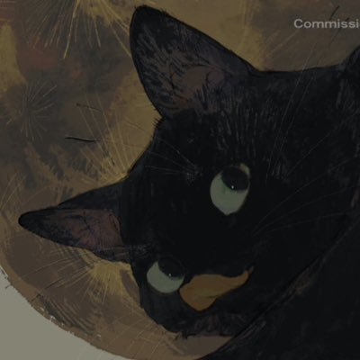

✟花鳥風月✟
@Doris_208
@S_Studio42 首先生活和性是分开的，或许有小部分性欲上头时候打出tag挑选一个合适的人发泄，但大部分时间使用这个账户并不是处于欲望时期，只是想发发日常吐槽。另一方面在某些男性眼里一旦发过母狗tag就仿佛被打上“下贱”的烙印，无论何时都可以不被当人接受各种各样的贬低辱骂，女孩们无法接受日常就有这样的骚扰

𝐒𝐨𝐭𝐚
@S_Studio42
谈点可能不受欢迎的话题，母狗。
前两天刷到，大意是没有女生会给自己打这个tag，包括但不限于更下位的母猪、母人等等，都是皮下男。
或许看到这些词汇你会本能反感，但难得可以把这件事放上台面，我想和大家平和的讨论一下这个话题。